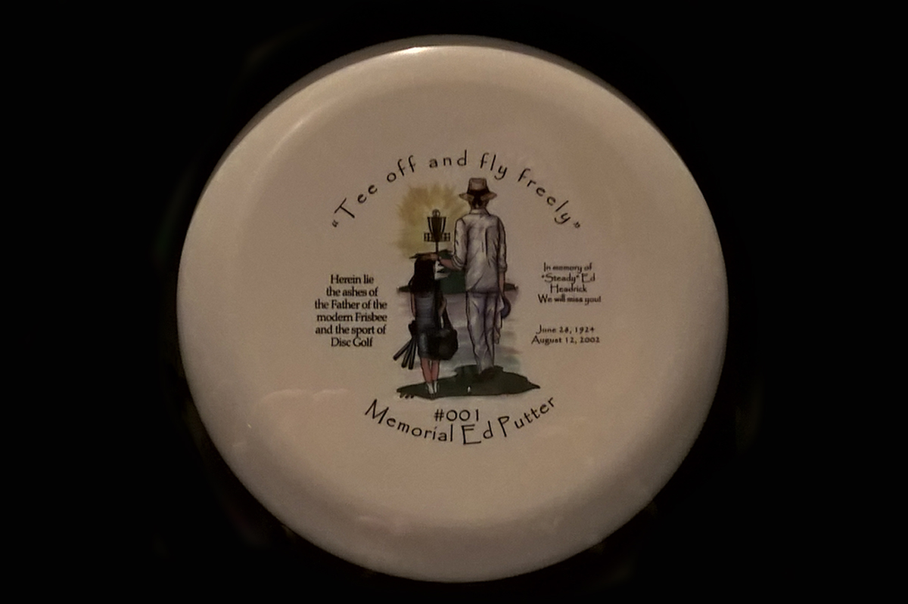
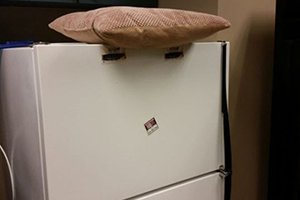
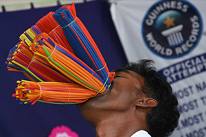
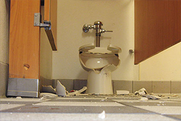
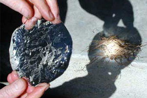
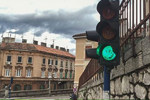
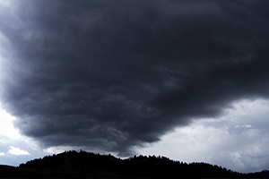
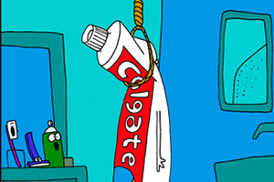
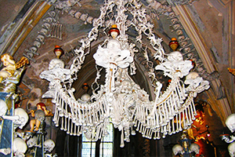
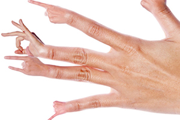

V meste Oshawa, v Ontario, v Kanade je ilegálne šplhať po stromoch
Osoba ktorá vymyslela Frisbee bola po smrti spopolnená a spravilo sa z nej Frisbee

Vták z loga Twitteru má meno - Lary
29. máj je oficiálne dňom Vankúša na chladničke

Ak Pinocchio povie "Teraz môj nos narastie." spôsobí to paradox
Svetový rekord v počte slamiek napchatých v ústach je 650


V Spojených štátoch je ročne zaevidovaných viac ako 40 000 zranení súvisiacich s toaletou
Pomocou ľadu sa dá spraviť oheň (spravením šošovky z ľadu)

Znečistenie vzduchu v Číne zvyšuje počet snehových zrážok v Kalifornii
Priemerná osoba strávi za život 6 mesiacov čakaním na zelenú


Niektoré oblaky môžu vážiť aj viac ako 450 000 kg
Dolárová bankovka sa môže zohnúť na jedno mieste približne 4 000-krát než sa roztrhne

Za posledných 5 minút Zem preletela viac ako 8 000 km
Guinessová kniha rekordov drží rekord za počet ukradnutí knihy z verejných knižníc
Keď vám v Japonsku sumo bojovník rozplače dieťa je to považované za šťastie
Colgate sa do Španielčiny preloží ako "obesiť sa"


V Českom kostole je luster vyrobený z kostí
Ročne zomrie okolo 2 500 ľavákov pretože použijú produkt určený pre pravákov

{kind=link}
{kind=link}